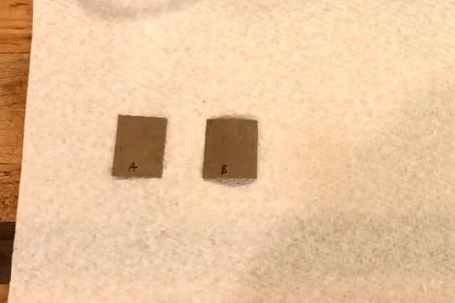

Biochemical Processes
Paper Bag Test
1. Cut the paper bag into 2 smaller pieces and label each piece into “A” and “B”.
2. Using a dropper or syringe, drop some water onto paper bag A, and drop oil into paper bag B.

3. Wait for at least 5 minutes, or until both substances have dried.
4.Hold the paper bags in front of a light source and identify its translucency.